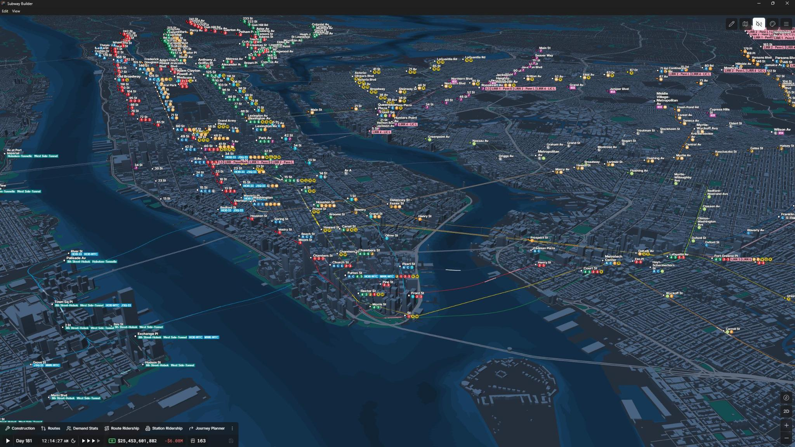
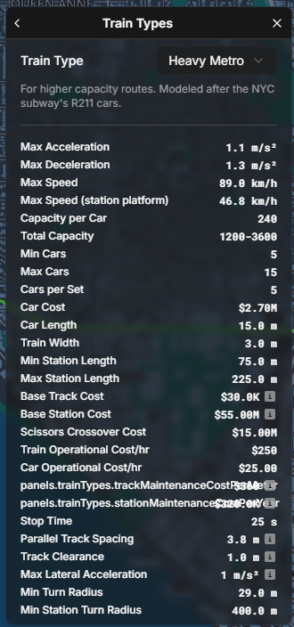
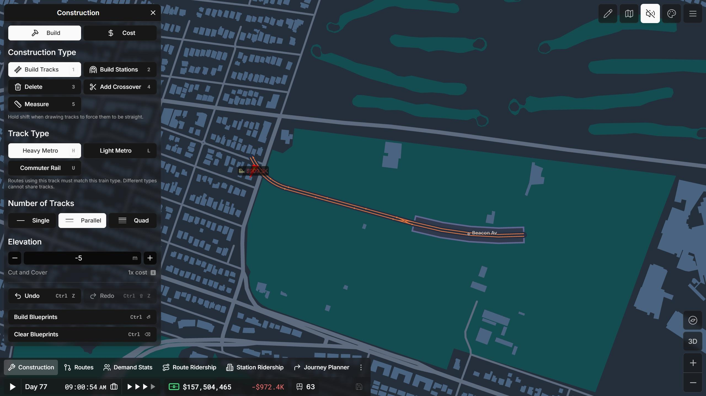
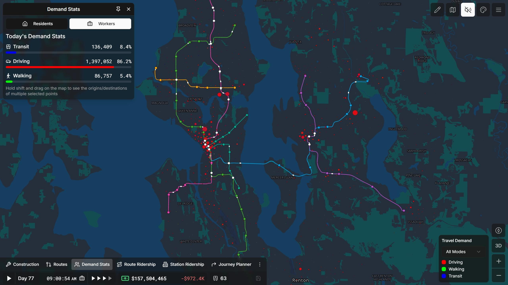
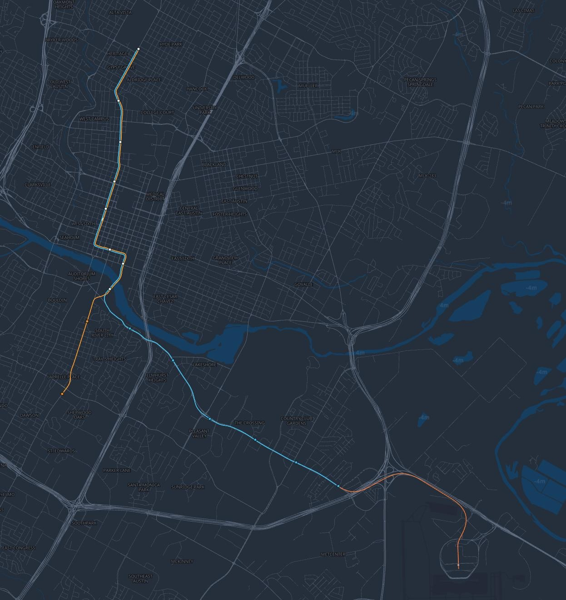
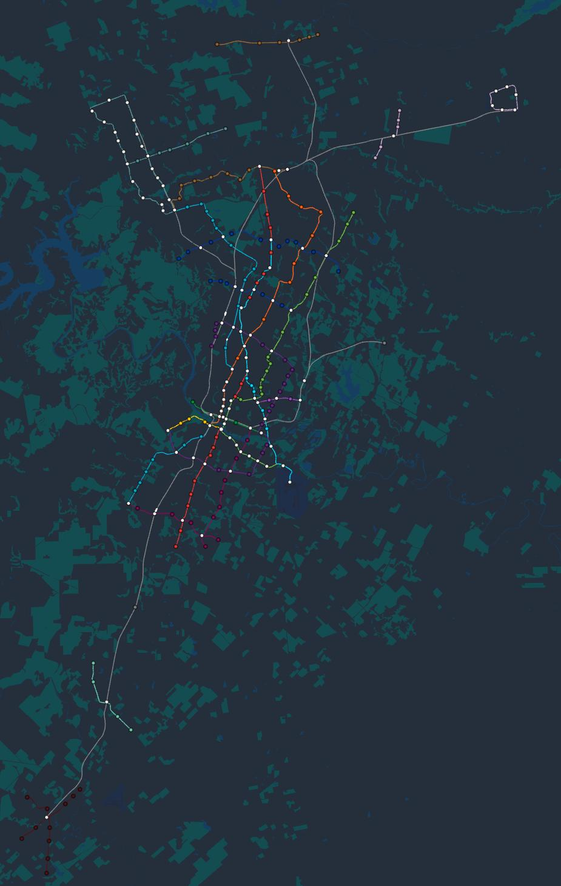
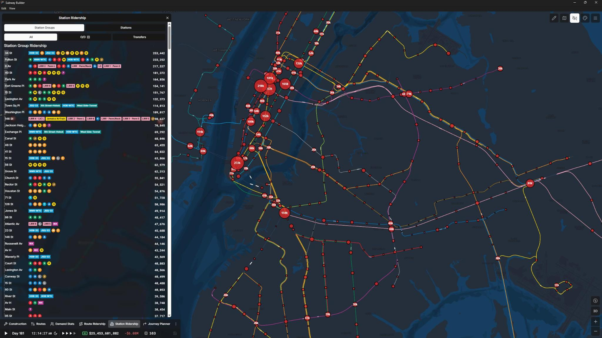

In early 2025, I saw a Reddit post showcasing a new transit-focused game called Subway Builder. I played a lot of Cities: Skylines (both one & two ), OpenTTD, and a little bit of NIMBY Rails. So I was excited to try out this new game. While the price is a little steep ($30 from the website), I spent my adult money and bought the game last December.

In normal mode, you start with $3 billion and are tasked with creating a rail transit network for your city. The game supports 34 cities and many more with mods. In terms of mode of transit, you can build heavy metro, light metro, and commuter rail. Each type of train has different characteristics such as speed, acceleration, turning radius, capacity, cost, and many more.

One quirk of Subway Builder is the building cost attempts to be similar to real life construction costs. While the game does not match today's absurdly inflated transit project budgets, it does a decent job. When you demolish a building, there is a cost determined by building foundation depth and size. Additionally, the cost of construction varies by the type of construction such as elevated, at grade, cut and cover, or deep bore. There is even an additional cost multiplier for building under bodies of water.

The transit ridership is determined by census data. The game adds population bubbles where people live and work. This means you need to design your transit network around the needs of the real world city. If you build in NYC, you need to serve the Financial District and Midtown. If you build in DFW, you will suffer.

Since I went to school in Austin, I decided to build Austin's Project Connect plan. I started with the orange and blue lines, with the airport expansion in blueprint mode. My starting line costed a cool $1 billion, while the real life plan is projected to cost $7.1 billion...

With my starting line, I was turning a profit but it was a slow trickle. It took many days to expand the network. Eventually, I added commuter rail to Cedar Park and light rail to the population dense corridors as I built my dream Austin transit network. Of course, it has a line from where I live to downtown and the airport.

After Austin, I turned my attention towards NYC. While Austin had budget constraints, NYC has capacity challenges. Instead of building light rail, NYC requires heavy metro lines. I decided to recreate the MTA subway network which was a fun challenge.

I also built transit networks in DFW, Seattle, Washington DC, and other cities included in the base game. Eventually, I wanted to build in Seoul, my home city. Seoul is not in the base game and requires mods. This is a great tutorial on how to install mods. I just started on my Seoul network but here is a video of the trains going around.
Subway Builder is a fun game that has a lot of potential. In its current state, the game is a bit overpriced for $30 (soon to be $40 on Steam). There are many bugs, performance issues, and features still missing. But even with the shortcomings, I was able to sink in countless hours into the game. If you enjoy managing passenger transportation in city builders or transit simulations, this game is worth considering.